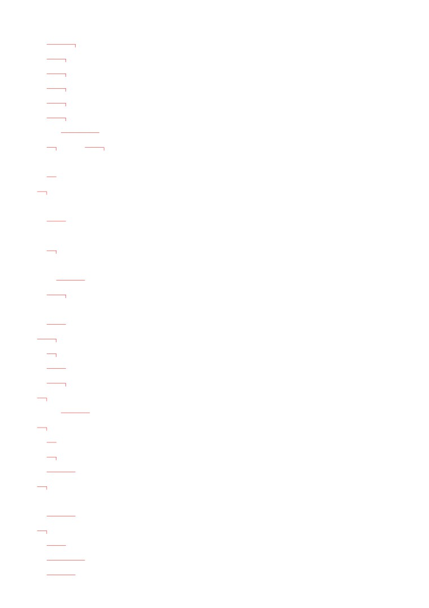
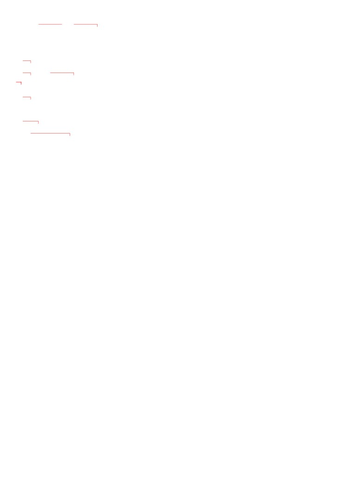
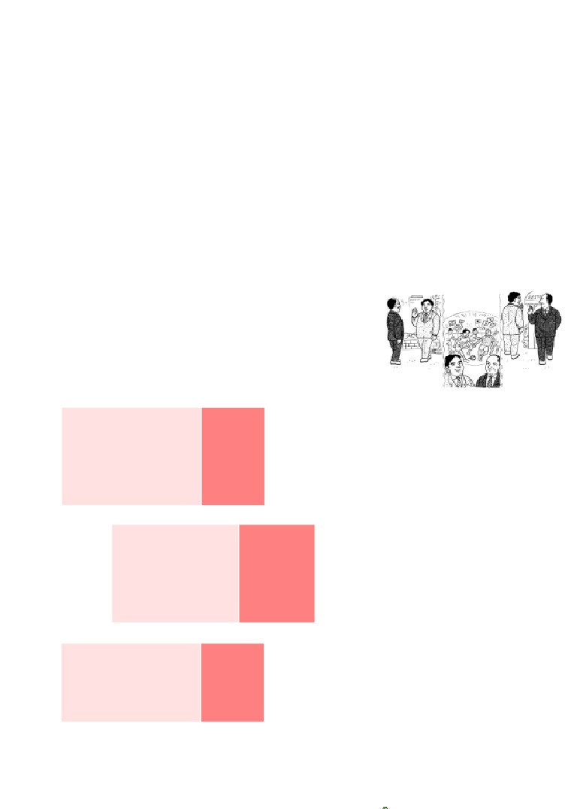
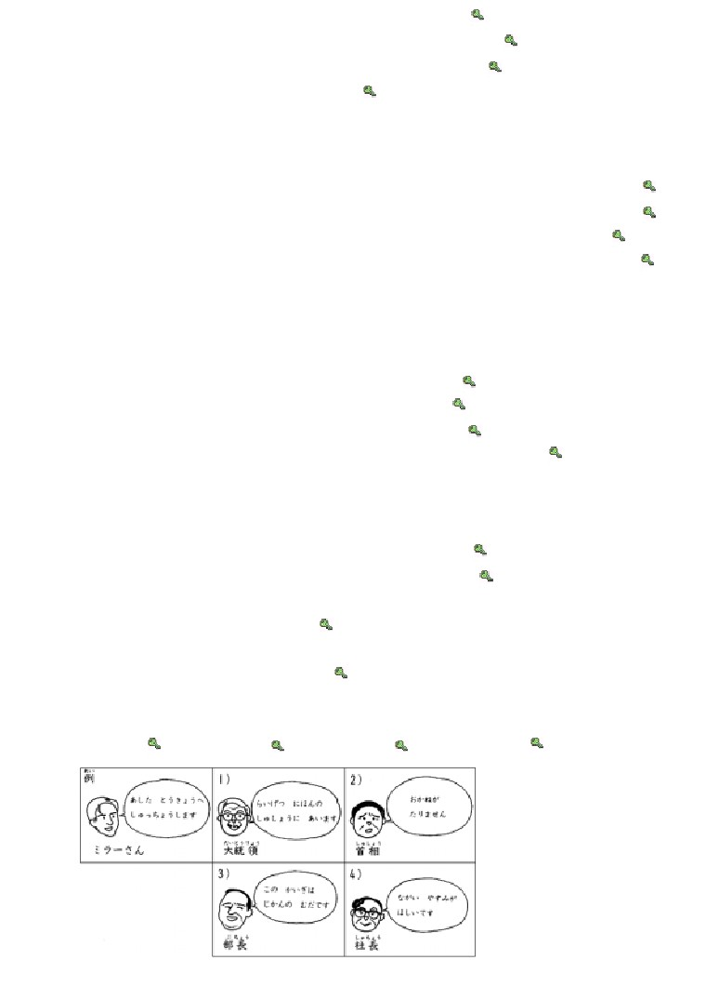
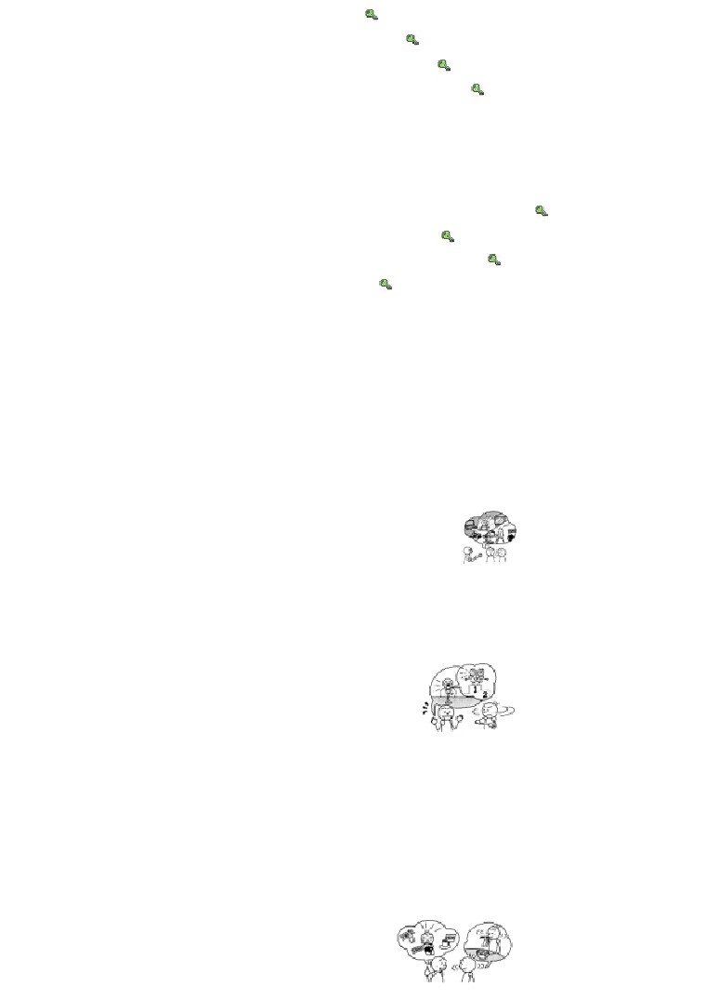
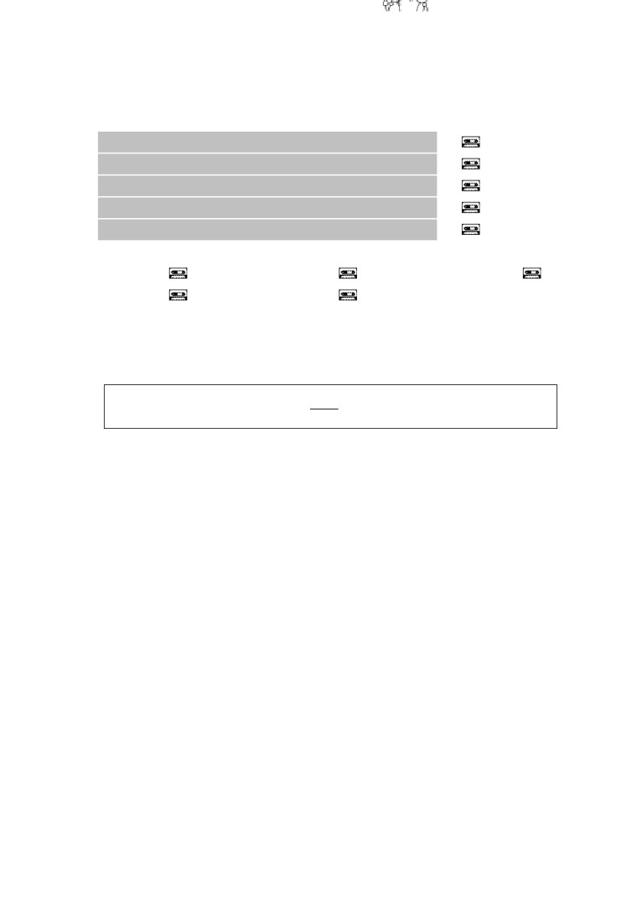
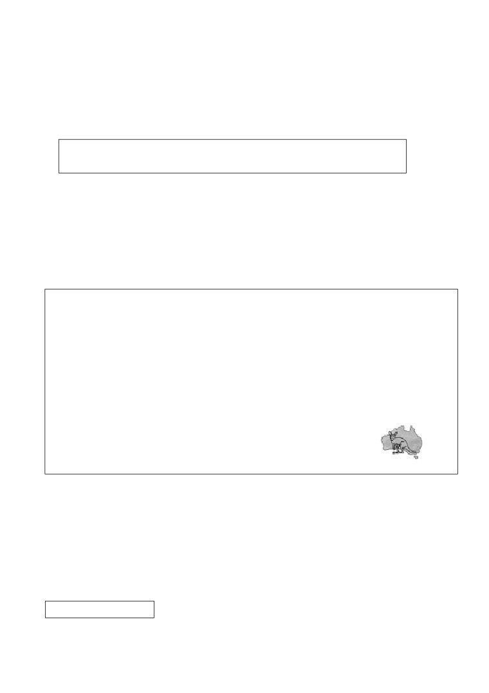
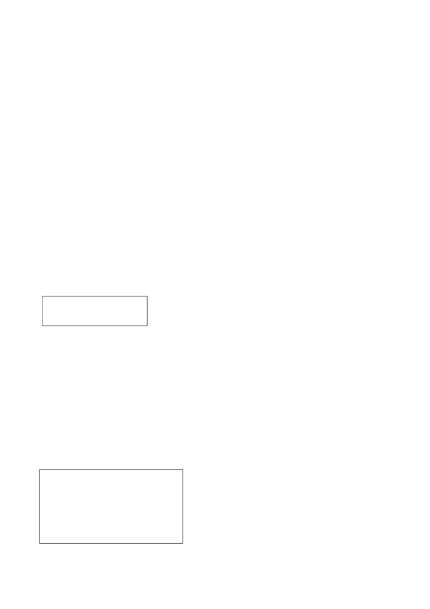
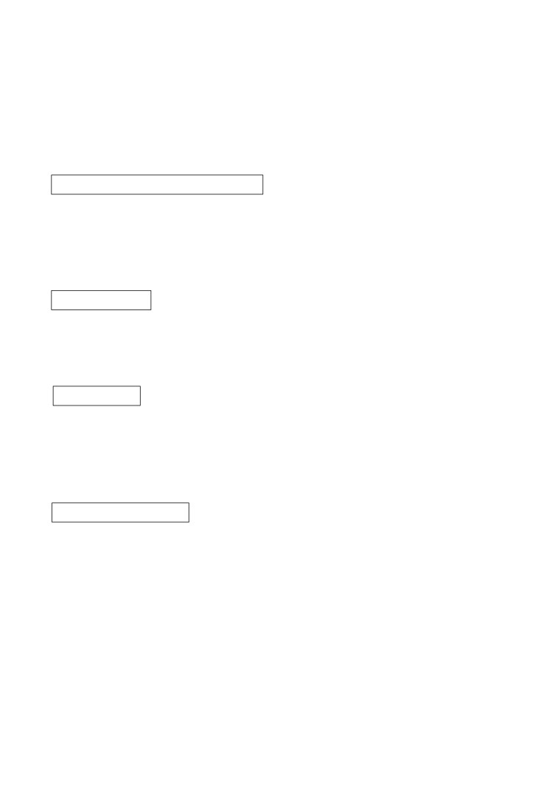

第２１
課
課:21 (頁:1/9)
ことば
1. おもいます Ⅰ
思います
想，認為，覺得
2. いいます Ⅰ
言います
說
3. たります Ⅱ
足ります
足夠
4. かちます Ⅰ
勝ちます
贏，得勝
5. まけます Ⅱ
負けます
輸，落敗
6.
あります
Ⅰ
舉行〔
節慶〕
［おまつりが～］
［お祭りが～］
7.
やくに たちます
Ⅰ
役に 立ちます
有用，起作用
8. むだ［な］
沒用〔的〕
9. ふべん［な］
不便［な］
不便〔的〕
10. おなじ
同じ
相同，一樣
11. すごい
厲害（的）（有褒或貶的意思）
12. しゅしょう
首相
總理，首相
13. だいとうりょう
大統領
總統
14. せいじ
政治
政治
15. ニュース
新聞
16. スピーチ
演講（～を します：進行演講）
17. しあい
試合
比賽
18. アルバイト
打工（～を します：打工）
19. いけん
意見
意見
20.［お］はなし
［お］話
講話，演講，故事
21. ユーモア
幽默
22. むだ
浪費
23. デザイン
設計
24. こうつう
交通
交通
25. ラッシュ
交通巔峰時間
26. さいきん
最近
最近
27. たぶん
大概，可能
28. きっと
一定
29. ほんとうに
真的，的確
30. そんなに
並不（用於否定）

課:21 (頁:2/9)
31.
～に ついて
關於～
32. しかたが ありません。
沒辦法
かい わ
■会話
しばらくですね。
好久不見了。
の
～でも 飲みませんか。
喝點～好嗎？
み
見ないと……。
一定要看，否則……
もちろん
當然
---以下單字請自行練習發音---
カンガルー
袋鼠
キャプテン・クック
庫克船長（1728～79)
ぶん けい
文型
あめ
ふ
おも
1. あした 雨が 降ると 思います。
しゅ しょう
らい げつ
い
い
2. 首相は 来月 アメりカへ 行くと 言いました。
れい ぶん
例文
し ごと
か ぞく
たい せつ
1. 仕事と 家族と どちらが 大切ですか。
たい せつ
おも
…どちらも 大切だと 思います。
に ほん
おも
2. 日本に ついて どう 思いますか。
ぶっ か
たか
おも
…物価が 高いと 思います。
3. ミラーさんは どこですか。
かい ぎ しつ
おも
…会議室に いると 思います。
し
4. ミラーさんは この ニュースを 知って いますか。
し
おも
…いいえ、たぶん 知らないと 思います。
しゅっちょう
ミラーさんは 出張して いましたから。
ね
5. テレサちゃんは もう 寝ましたか。
ね
おも
…はい、もう 寝たと 思います。
しょく じ
いの
6. 食事の まえに、お祈りを しますか。
い
…いいえ、しませんが、「いただきます」と 言います。
かい ぎ
なに
い けん
い
7. 会議で 何か 意見を 言いましたか。
おお
い
…はい。 むだな コピーが 多いと 言いました。
がつ
きょう と
まつ
8.
7月に 京都で お祭りが あるでしょう？

課:21 (頁:3/9)
…ええ、あります。
かい わ
会話
おも
わたしも そう 思います
まつ
もと
松 本：
あ、サントスさん、しばらくですね。
まつ もと
げん き
サントス：
あ、松本さん、お元気ですか。
まつ
もと
の
松 本：
ええ。 ちょっと ビールでも 飲みませんか。
サントス：
いいですね。
------------------------------
こん ばん
じ
に ほん
し あい
サントス：
今晩 10時から 日本と ブラジルの サッカーの 試合が
ありますね。
まつ
もと
み
松 本：
ああ、そうですね。 ぜひ 見ないと……。
か
おも
サントスさんは どちらが 勝つと 思いますか。
サントス：
もちろん ブラジルですよ。
まつ
もと
さい きん
に ほん
つよ
松 本：
でも、最近 日本も 強く なりましたよ。
おも
サントス：
ええ、わたしも そう 思いますが、……。
かえ
あ、もう 帰らないと……。
まつ
もと
かえ
松 本：
そうですね。 じゃ、帰りましょう。
れん しゅう
練習 Ａ
あめ
おも
1.
あした 雨が
ふる
と 思います。
さ とう
佐藤さんは ゴルフを
しない
やま だ
山田さんは もう
かえった
に ほん
ぶっ か
日本は 物価が
たかい
に ほん
こう っう
日本は 交通が
べんりだ
しゅ しょう
だい とうりょう
い
2. 首相は
あした 大統領に
あう
と 言いました。
らい げつ
来月 アメリカヘ
いかない
えい ご
英語で スピーチを
した
けい ざい
もん だい
経済の 問題は
むずかしい
かい ぎ
会議は
たいへんだ
3.
あした パーティーに
くる
でしょう？
てら
お寺で コンサートが
あった
おお さか
た
もの
大阪は 食べ物が
おいしい
と しょ かん
ひと
図書館の 人は
しんせつ
れん しゅう
練習 Ｂ
れい
けい ざい
べんきょう
1. 例： 経済の 勉強は おもしろいです
けい ざい
べん きょう
おも
→ 経済の 勉強は おもしろいと 思います。

やま だ
はたら
課:21 (頁:4/9)
1)
山田さんは ほんとうに よく 働きます →
でん き
せい ひん
2)
パワー電気の 製品は デザインが いいです →
じ かん
つか
かた
じょう ず
3)
ミラーさんは 時間の 使い方が 上手です →
4)
ダイエットは むだでした →
れい
べん り
おも
2. 例： ファクスは 便利だと 思いますか。（ はい ）
べん り
おも
→ はい、便利だと 思います。
おお さか
みず
おも
1)
大阪の 水は おいしいと 思いますか。（ いいえ、 あまり ） →
せん せい
おも
2)
ワットさんは いい 先生だと 思いますか。（ はい、とても ） →
いぬ
ねこ
やく
た
おも
いぬ
3)
犬と 猫と どちらが 役に 立つと 思いますか。（ 犬 ） →
に ほん
おも
な ら
4)
日本で どこが いちばん きれいだと 思いますか。（ 奈良 ） →
れい
に ほん
こう つう
べん り
に ほん
おも
3.
例： 日本 （ 交通が 便利です ） →
日本に ついて どう 思いますか。
こう つう
べん り
おも
……交通が 便利だと 思います。
に ほん
わか
ひと
あそ
1)
日本の 若い 人 （ よく 遊びます ） →
に ほん
や きゅう
じ かん
なが
2)
日本の 野球 （ 時間が 長いです ） →
に ほん
かい しゃ
なつ やす
みじか
3)
日本の 会社 （ 夏休みが 短いです ） →
えい が
たの
4)
あの 映画 （ ユーモアが あって、楽しいです ） →
れい
ぶ ちょう
じ む しょ
4.
例： 部長は 事務所に いますか。（ いいえ ）
おも
→ いいえ、いないと 思います。
ぶ ちょう
かえ
1)
部長は もう 帰りましたか。（ はい ） →
はこ
なか
2)
かぎは どこですか。( あの 箱の 中 ) →
し あい
ちゅう ごく
に ほん
か
3)
あしたの 試合は 中国と 日本と どちらが 勝ちますか。
ちゅうごく
（ きっと 中国 ） →
やま だ
し
4)
山田さんは この ニュースを 知って いますか。
（ いいえ、たぶん ） →
れい
とうきょう
しゅっちょう
い
5. 例：
→ ミラーさんは あした 東京へ 出張すると 言いました。
1)
→
2)
→
3)
→
4)
→
れい
やす
やす
6.
例： あしたは 休みです →
あしたは 休みでしょう？

おお さか
みどり
すく
課:21 (頁:5/9)
1)
大阪は 緑が 少ないです →
えい ご
せん せい
2)
ワットさんは 英語の 先生です →
き むら
し
3)
木村さんは イーさんを 知りません →
し あい
4)
きのう サッカーの 試合が ありました →
れい
に ほん
た
もの
たか
たか
7.
例1： 日本は 食べ物が 高いでしょう？ ( ええ ) →
ええ、 高いです。
れい
たか
例2： その カメラは 高かったでしょう？（いいえ）
たか
→ いいえ、 そんなに 高くなかったです。
とうきょう
1)
東京の ラッシュは すごいでしょう？（ ええ ） →
し ごと
たい へん
2)
仕事は 大変でしょう？（ いいえ ） →
ほっ かい どう
さむ
3)
北海道は 寒かったでしょう？（ いいえ ） →
つか
4)
疲れたでしょう？（ ええ ） →
れんしゅう
練習 Ｃ
に ほん
せい かつ
おも
1. Ａ: 日本の 生活に ついて どう 思いますか。
べん り
ぶっ か
たか
おも
Ｂ: そうですね。 便利ですが、物価が 高いと 思います。
おも
Ａ: ワットさんは どう 思いますか。
おな
い けん
Ｃ: わたしも 同じ 意見です。
あたら
くう こう
1) 新しい 空港
こう つう
ふ べん
きれいですが、ちょっと 交通が 不便です
しゅしょう
2)
首相の スピーチ
なが
おもしろいですが、いつも 長いです
さい きん
こ
3)
最近の 子ども
べん きょう
ほん
よ
よく 勉強しますが、本を 読みません
せん せい
はなし
2. Ａ: きのうの 先生の お話は おもしろかったですよ。
はなし
Ｂ: そうですか。 どんな 話でしたか。
せん せい
たい せつ
Ａ: 先生は いちばん 大切な
とも だち
い
ものは 友達だと 言いました。
Ｂ:
そうですか。 わたしは
おも
そうは 思いませんが。
あたま
ひと
りょう り
じょ うず
1)
頭が いい 人は 料理が 上手です
じ かん
2) アルバイトは 時間の むだです
さい きん
わか
ひと
せい じ
はな
3) 最近の 若い 人は 政治に ついて 話しません
に ほん
た
もの
たか
3. Ａ:
日本は 食べ物が 高いでしょう？
たか
Ｂ: ええ、ほんとうに 高いですね。
おも
でも、おいしいと 思います。
あさ
朝の ラッシュは すごいです
1)
しかたが ありません

す も う
課:21 (頁:6/9)
2)
相撲は おもしろいです
たか
チケットが 高いです
に ほん じん
でん しゃ
ね
3)
日本人は 電車で よく 寝ます
あぶ
危ないです
もん だい
問題
れい
おも
1.
1)
…例： はい、いいと 思います。
れい
こう つう
べん り
おも
2)
…例： 交通が 便利だと 思います。
れい
し
おも
3)
…例： いいえ、 あまり 知らないと 思います。
い
4)
…「いただきます」と 言います。
れい
ゆう めい
5)
…例： はい、有名です。
2.
1)
( × )
2)
( × )
3)
( × )
4)
( ○ )
5)
( × )
れい
かの じょ
き
3.
例： 彼女は 来ますか。
こ
おも
……いいえ、 きょうは （ 来ない ） と 思います。
かえ
き
じょう ず
やく
た
おいしいです 帰ります 来ます 上手です 役に 立ちます
おお さか
みず
1)
大阪の 水は どうですか。
おも
……あまり （ おいしくない ） と 思います。
すず き
えい ご
2)
鈴木さんは 英語が できますか。
じょう ず
おも
ねん
……ええ、（ 上手だ ） と 思います。 アメリカに 3年 いましたから。
じ しょ
3)
その 辞書は いいですか。
やく
た
おも
……ええ、とても （ 役に 立つ ）と 思います。
た なか
4)
田中さんが いませんね。
かえ
……かばんが ありませんから、 もう うちへ （ 帰った ） と
おも
思います。
れい
ひま
4.
例： Ａ:あした 暇ですか。
かい しゃ
い
Ｂ:あしたは 会社へ 行かなければ なりません。
かい しゃ
い
→ Ｂさんは あしたは （ 会社へ 行かなければ ならない ）と
い
言いました。
さくら
き せつ
はな み
い
1)
Ａ:桜の 季節ですね。 どこか お花見に 行きますか。
にち よう び
か ぞく
おお さか じょう こう えん
い
Ｂ:ええ、日曜日 家族と 大阪城公園へ 行きます。
にち よう び
か ぞく
おお さか じょう こう えん
い
い
→ Ｂさんは （ 日曜日 家族と 大阪城公園へ 行く ）と 言いました。
ほん
2)
Ａ:この 本、おもしろいですよ。
か
Ｂ:そうですか。 じゃ、 貸して ください。
ほん
い
→ Ａさんは この 本は （ おもしろい ）と 言いました。

課:21 (頁:7/9)
3)
Ａ:パーティーは にぎやかでしたか。
Ｂ:ええ、とても にぎやかでした。
い
→ Ｂさんは パーティーは （ にぎやかだった ）と 言いました。
にち よう び
し あい
み
い
4)
Ａ:すみません。 日曜日の 試合を 見に 行く ことが できません。
ざん ねん
Ｂ:そうですか。 残念です。
にち よう び
し あい
み
い
い
→ Ａさんは 日曜日 （ 試合を 見に 行く ことが できない ）と 言いま
れい
なに
た
5.
例： おなかが （ すいた ）でしょう？ 何か 食べませんか。
あつ
ち ず
つか
あります 暑いです すきました 地図です 疲れました
らい げつ
きょう と
ゆう めい
まつ
1)
来月 京都で 有名な お祭りが （ ある ） でしょう？
つか
すこ
やす
2)
（ 疲れた ） でしょう？ 少し 休みましょう。
あつ
3)
（ 暑い ） でしょう？ エアコンを つけましょうか。
に ほん
ち ず
ひろ しま
4)
それは 日本の （ 地図 ） でしょう？ 広島は どこですか。
6.
カンガルー
どう ぶつ
な まえ
し
この 動物の 名前を 知って いますか。 『カンガルー』 です。
す
ねん
オーストラリアに 住んで います。 1778年に イギリスの
ふね
い
キャプテン・クックは 船で オーストラリアヘ 行きました。 そして、
はじ
どう ぶつ
み
ひと
初めて この 動物を 見ました。クックは オーストラリアの 人に
どうぶつ
な まえ
し
い
ひと
この 動物の 名前を 知りたいと 言いました。 その 人は
し
オーストラリアの ことばで 「カンガルー（ わたしは 知らない ）」と
い
き
じん
言いました。 それを 聞いて、イギリス人は みんな
どう ぶつ
な まえ
おも
この 動物の 名前は 『カンガルー』だと 思いました。
どう ぶつ
な まえ
それから、この 動物の 名前は 『カンガルー』に
なりました。
ねん
み
1)
（ ○ ）キャプテン・クックは 1778年まで カンガルーを 見た ことが
ありませんでした。
じん
ひと
2)
（ ○ ）イギリス人は オーストラリアの 人の ことばが
わかりませんでした。
ひと
どう ぶつ
な まえ
し
3)
（ × ）オーストラリアの 人は この 動物の 名前を 知って いました。
文法
おも
１.
普通形 と 思います
我想…
「おもいます」的內容附加助詞「と」來表示。
1) 表示推量時
あめ
ふ
おも
① あした 雨が 降ると 思います。
我想明天會下雨。

ね
おも
課:21 (頁:8/9)
② テレサちゃんは もう 寝たと 思います。
我想德勒莎已經睡了。
推量否定的內容時，需將「と
」前面的句子改成否定形。
し
③ ミラーさんは この ニュースを 知って いますか。
し
おも
…いいえ、たぶん 知らないと 思います。
米勒先生知道這個消息嗎？
…我想他大概不知道。
2)
闡述意見時
に ほん
ぶっ か
たか
おも
④ 日本は 物価が 高いと 思います。 我覺得日本的物價高。
當使用「おもいます
」詢問對某件事的意見時，需使用「～に ついて どう
おもいますか」，「どう」後面不需要用「
と」。
あたら
くう こう
おも
⑤ 新しい 空港に ついて どう 思いますか。
こう つう
ふ べん
おも
…きれいですが、ちょっと 交通が 不便だと 思います。
你覺得新機場怎麼樣？
…很漂亮，但是交通不太方便。
對他人的意見表示同意或不同意時，以如下方式表達。
べん り
⑥ Ａ：ファクスは 便利ですね。
A
：傳真很方便嘛！
おも
Ｂ：わたしも そう 思います。
B
：我也覺得。
おも
Ｃ：わたしは そう［は］ 思いません。 C：我不覺得。
２.
い
叫…，說…
普通形
說的內容附加助詞「と
」來表示。
1) 直接引用時，將該內容直接放進「」中。
ね
やす
い
⑦ 寝る まえに
「お休みなさい」と 言います。
睡覺前要說：「晚安」。
らい しゅう とう きょう
しゅっちょう
い
⑧ ミラーさんは
「来週 東京へ 出張します」と 言いました。
米勒先生說：「下週要去東京出差」。
2) 間接引用時，「と」之前用普通形。引用句的時態不受主句時態的影響。
らい しゅう とう きょう
しゅっちょう
い
⑨ ミラーさんは 来週 東京へ 出張すると 言いました。
米勒先生說他下週要去東京出差。
３.
動詞
普通形
}
い形容詞
でしょう？
}
な形容詞 } 普通形
名詞
～
だ
說話人認為聽話人理當知道該話題，而且希望聽話人同意自己的意見時，用上
升調「でしょう
」來確認聽話人同意。

い
課:21 (頁:9/9)
⑩ あした パーティーに 行くでしょう？
い
…ええ、 行きます。
明天你會去參加派對吧？
…嗯，會去。
ほっ かい どう
さむ
⑪ 北海道は 寒かったでしょう？
さむ
…いいえ、そんなに 寒くなかったです。
北海道很冷吧？
…不，並不很冷。
４.
名詞 1 （地點） で 名詞 2 が あります
當名詞2表示晚會、音樂會、節日、事件、災害、慶祝活動時，這個「ありま
す」就表示舉行、發生的意思。
とう きょう
に ほん
し あい
⑫ 東京で 日本と ブラジルの サッカーの 試合が あります。
在東京要舉行日本和巴西的足球比賽。
５.
名詞（場合） で
事情發生的場所用「で」表示。
かい ぎ
なに
い けん
い
⑬ 会議で 何か 意見を 言いましたか。
在會議上 （你）發表什麼意見了嗎？
６.
名詞 でも 動詞
建議他人做某事或提議時；舉出同一範疇的物品（下面⑭
例句是飲料）之一為例時
，用助詞「でも
」。
の
⑭ ちょっと ビールでも 飲みませんか。
一起去喝點啤酒什麼的好嗎？
７.
動詞 ない形 ないと……
這個句型，是省略「動詞 形ないと いけません」中「いけません」的表達方
式。「動詞 形ないと いけません」和第17課學習的「動詞 形なければ
なりません」是類似的表達方式。
かえ
⑮ もう 帰らないと……。
我該回去了。